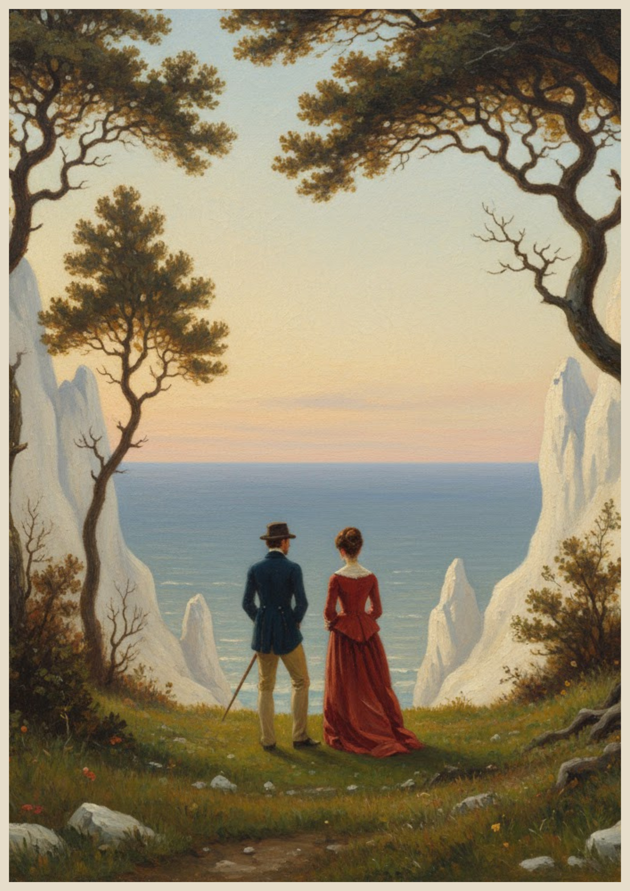
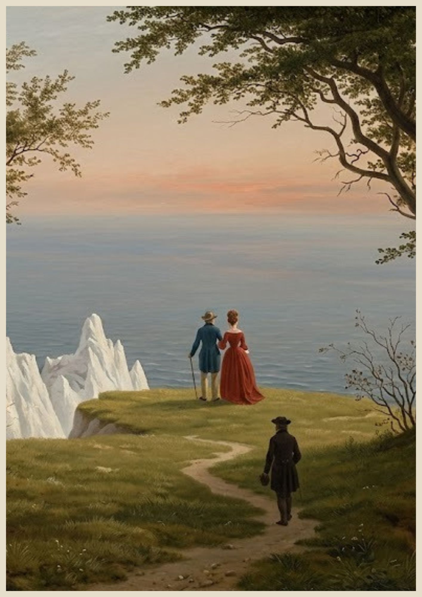
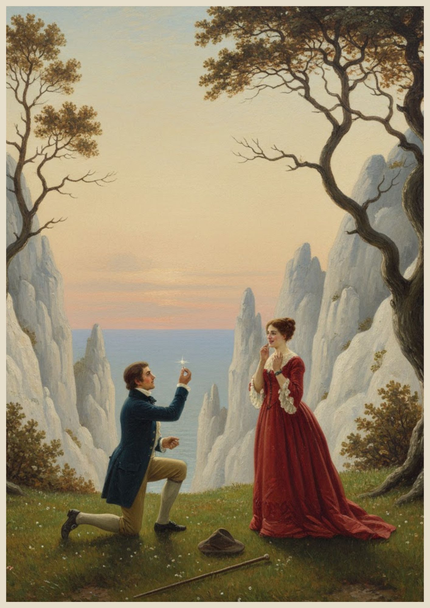
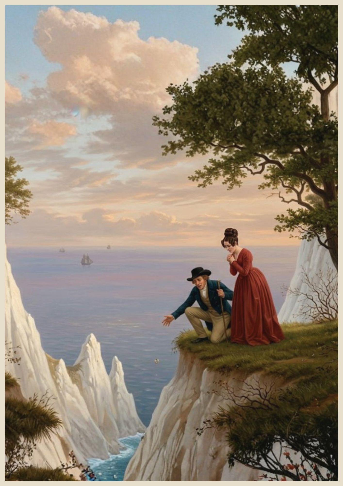
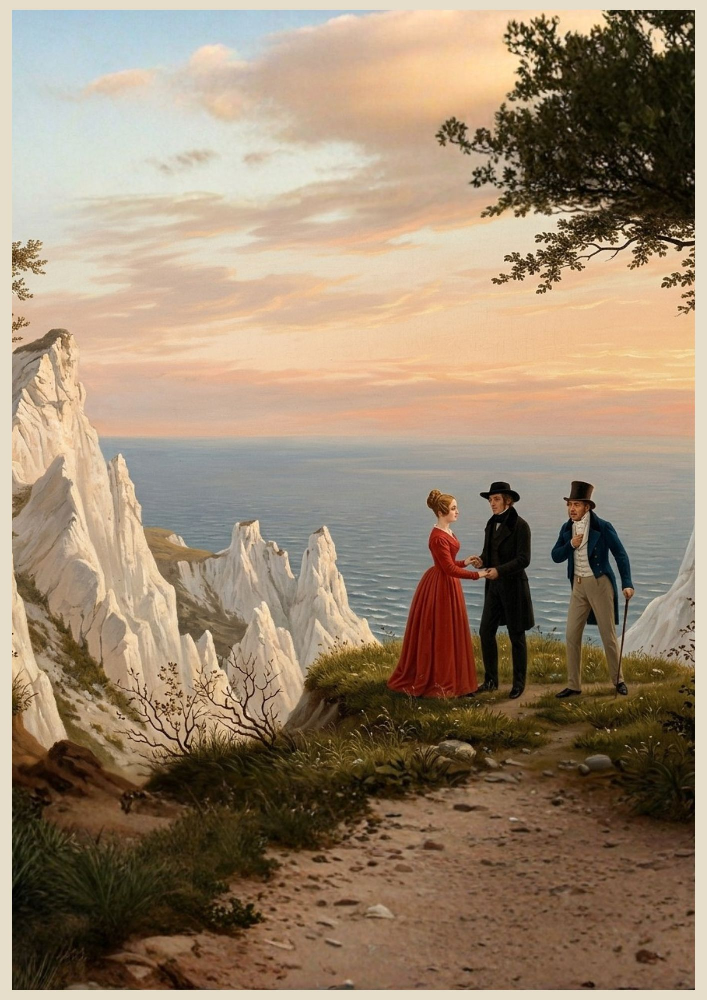

Il mondo sembrava fermarsi sull'orlo di quelle scogliere bianche. Mentre il sole iniziava la sua lenta discesa verso l'orizzonte, i due giovani rimasero in silenzio, rapiti dalla vastità del mare. In quel momento, lui sentiva il peso dell'anello nella tasca — pesante come una promessa che non vedeva l'ora di sussurrare al vento.


Ma prima che una sola parola potesse essere pronunciata, un'ombra si allungò verso di loro. Un uomo stava risalendo il sentiero della scogliera con una calma che gelava il sangue. La sua presenza improvvisa portò con sé una tensione elettrica — un presagio oscuro che fece tremare le mani dell'innamorato ancora inginocchiato.
"Sposami." La parola uscì tremante mentre lui scivolava su un ginocchio, offrendo alla luce del tramonto il pegno del suo amore. Il cuore di lei sembrò saltare un battito; portò le mani al petto, soffocando un grido di gioia. In quell'istante sospeso tra cielo e terra, il futuro appariva luminoso come il riflesso del diamante che teneva tra le dita.


Poi, il disastro. Un brivido di troppo, un eccesso di emozione, e la presa vacillò. L'anello — un minuscolo cerchio d'oro carico di sogni — sfuggì alle dita dell'uomo. I due restarono impietriti, guardando quel piccolo lampo di luce danzare nell'aria prima di precipitare nell'abisso, verso le rocce sferzate dalle onde.
"Èlì! Lo vedo, è caduto proprio là sotto!" gridò lei, sporgendosi dal ciglio del dirupo. Lui si gettò a terra, incurante dell'abito elegante, tastando freneticamente l'erba e le pietre. Erano così assorti nel loro dolore da non accorgersi che, dall'ombra degli alberi, qualcuno li osservava con una calma inquietante.


L'amante si fece avanti con una confidenza che tradiva un legame profondo. Ignorando il fidanzato, si rivolse a lei con un'intimità quasi brutale: "Cercate pure quell'oro, ma un anello non serve a chi ha già donato il cuore a un altro." In quella vicinanza rivelatrice, il giovane capì che il gioiello non era l'unica cosa che aveva perso per sempre.